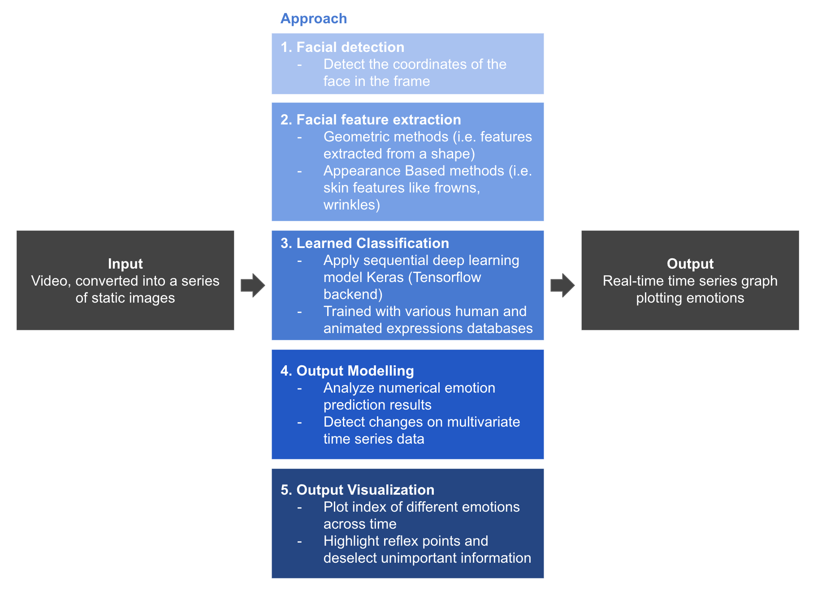
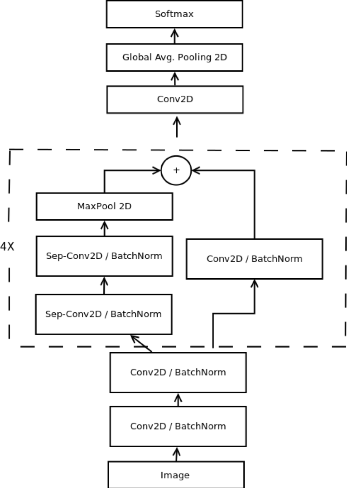
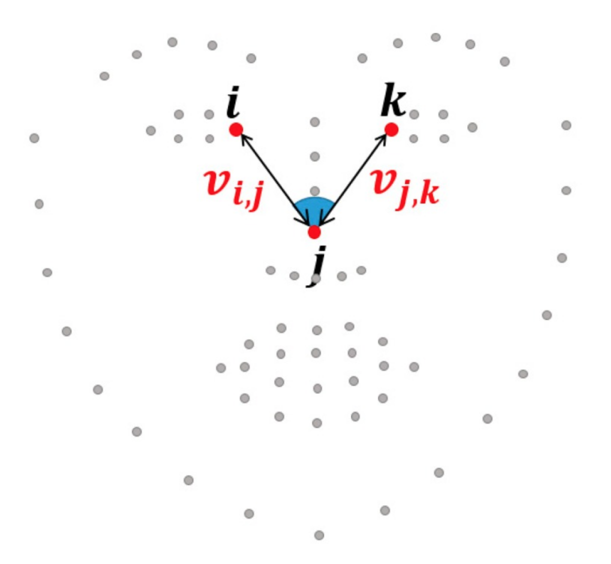
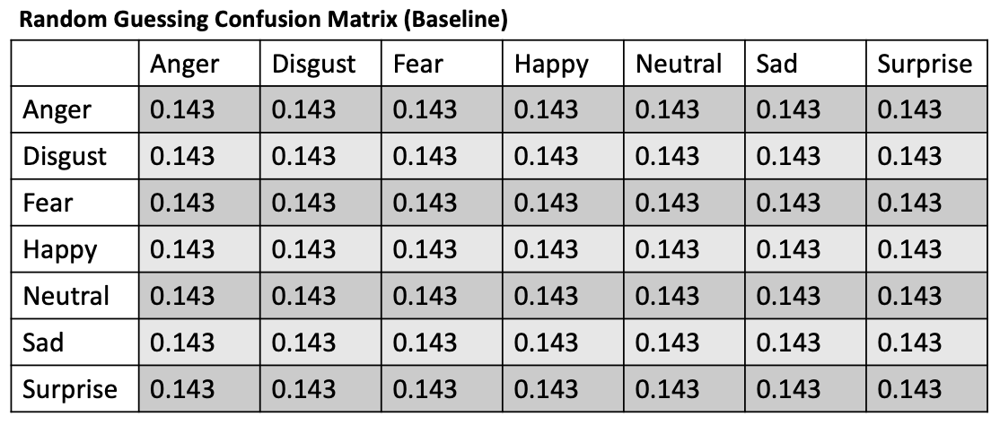
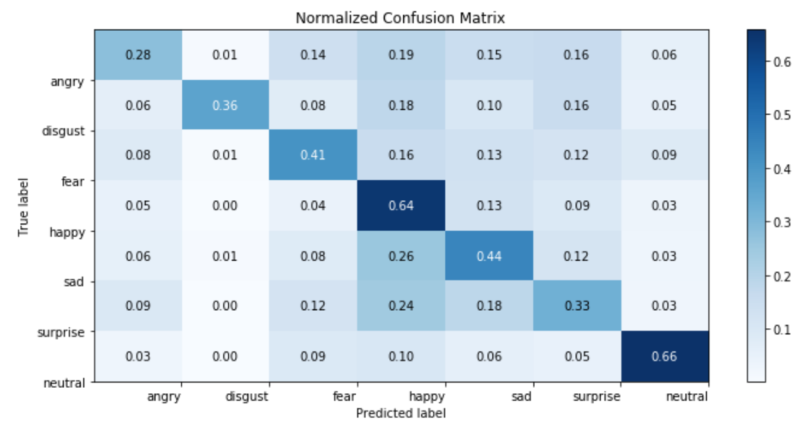
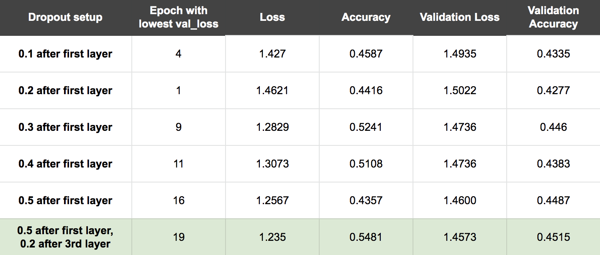
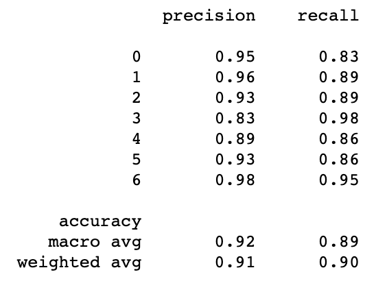
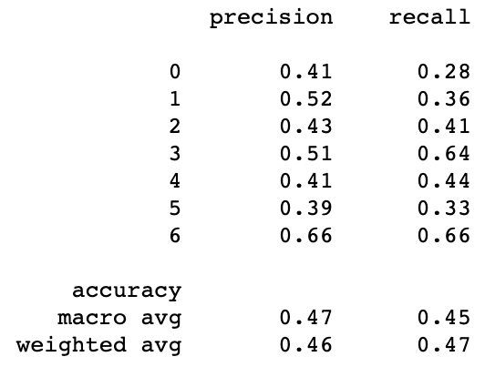
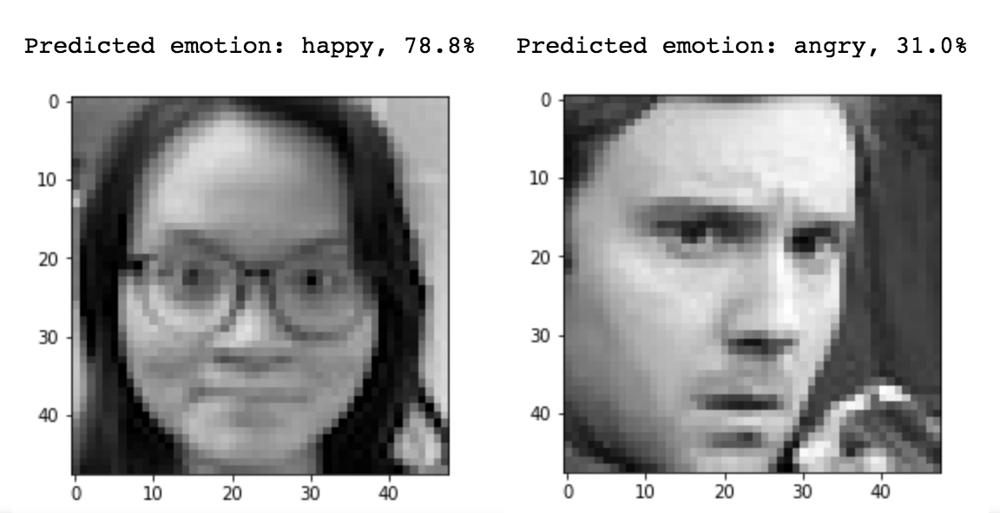
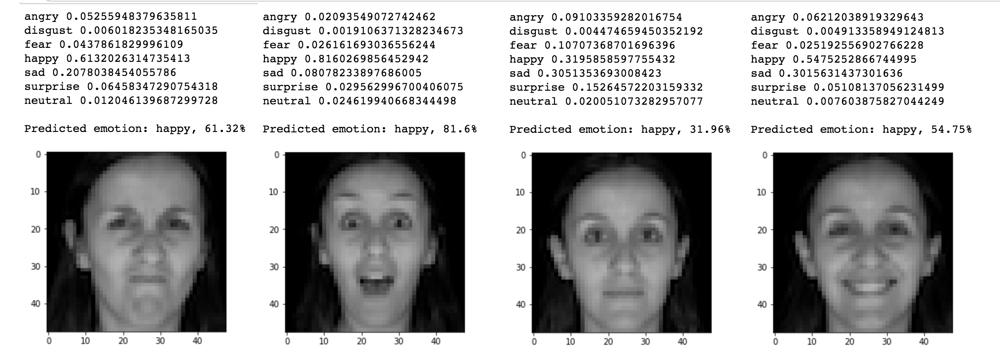

Abstract
This project aims at extracting emotions from video in real time. To do so, we experiment with both deep learning and non- deep learning methods: (1) Training the Mini-Xception CNN from stratch, (2) Using VGG-16 to extract features and training our own neural network classifier, and (3) Manually extracting features and training our own classifier. We have finished the core implementation of the second approach and are currently working on the other two. Our initial results for the second method are somewhat overfitting, which we will tackle by tuning our model in the next phase of this project. Our final product is going to be a program that detects emotions from facial expressions overtime, which would be widely applicable in different fields.

Introduction
Facial expressions are a form of nonverbal communication and many studies have been conducted to classify facial expressions from images. Most studies and datasets classify expressions of seven universal emotions which include:
anger, disgust, fear, happy, sad, surprise, neutral. We found that in practice, researchers either use a purely deep learning approach that requires significant compute power, a purely non-deep learning approach that focus on clever feature extraction, or a hybrid of the two approaches. In our project, we would like to experiment with a few existing emotion detection algorithims and determine which one extends best to detecting emotions over time (e.g. video). Adding a time component opens up the possibility of understanding the relative changes in emotions as reactions to some real-world stimulus. In addition, we would like to find a novel way to visualize the output of the emotion detection on video clips in real time.
One application of our project would be real-time sentiment analysis for the state of the union address. Instead of typical sentiment analysis that uses NLP on tweets or other direct surveying methods, our approach could extract emotions from video in real time, display smoothed changes in emotions over time and even conduct a variety of traditional time series analysis such as change detection. Another application could be determining when and what types of ads to serve during a Youtube video so the mood of the ad matches the mood of the content. We believe a program that detects emotion from facial expressions over time would be widely applicable.
Approach
To build our application, we plan to first train an emotion detection classifier on image datasets. To extend to video, we plan to pull frames from a video at a constant rate and apply our pretrained classifier on each frame.
Our team is taking 3 distinct approaches to build the emotion detection classifier. We plan to compare and contrast the accuracies and complexities of each method to determine which will be best for our video application. Since we knew computational efficiency was important to our application, we made sure each of the approaches tried to minimize the require compute power in some manner.
Approach 1: Training the Mini-Xception CNN from stratch
Originally proposed by
Arriaga in 2018, the mini-xception CNN was designed to be a lightweight model that could run real time emotion classification in hardware constrainted applications such as robotics. Below is the full architecture of mini-xception. The general idea in this approach is to remove the fully connected layers typically found in feature extraction CNNs and replace them with residules modules and depth-wise separable convolutions. Residual modules change the mapping between 2 layers so the new features become the difference between original feature map and desired feature map. Depth-wise separable convolutions reduce computation reuqired in convolving first preforming depth-wise convolution separately on each channel and then preforming point-wise convolution.

Approach 2: Using VGG-16 to extract features and training our own neural network classifier
A common approach we found online was
tranfer learning- using a pretrained deep learning model to extract features and then training a final classification layer for any custom application. We decided to use a pretrained VGG-16 model, a general purpose object detection network created by the Visual Gemometry Group. In this approach, we first used the first 13 convolutional layers of VGG-16 to extract features and then trained a final neural network to classify the features into the 7 emotion categories.
Approach 3: Manually extracting features and training our own classifier
For our final approach, we decided to manually extract features and then use a non-deep learning classifier. A common approach we found was using facial landmarks to extract geometric features. In 2018,
Jeong used the dlib's frontal face detector to extract 64 facial landmarks and manually extracted distance ratios and angles between the landmarks as seen below. Using these features, she constructed a hierachical weighted random forest (WRF) and achieved comparable validation accuracies to DNN based methods. In this approach, we hope to achieve the same accuracies by manually extracting our own geometric features and then training a WRF to classify emotion between the 7 categories.

Experiments & Design
Experiential Set Up and Evaluation Metrics
In order to fairly compare the accuracies across the 3 approaches, we decided to use the
fer2013 dataset (35,887 images) for all 3 methods with 85% of the data (30,504 images) for training/validation and the remaing 15% (5,383 images) for testing. To evaluate the performance of each classifier we decided to compare the confusion matrix of the 7 emotions. As a baseline, we considered what the confusion matrix would look like if our classifier was randomly guessing.

Current State of Experiments
Below is a summary matrix of our progress with each approach.
| Approach |
Progress & Roadblocks |
Results |
| Approach 1: Mini-Xception |
We were able to translate the architecture described in Arriaga 2018 into a Keras model; however, we are hitting a computational limit when we try to train fer2013 dataset on our CPUs. As a next step, we would like to set up Google Cloud account try to train the model on a GPU.
|
TBD
|
| Approach 2: Transfer Learning with VGG-16 |
We sucessfully extracted features using the first 13 layers of VGG-16 and trained a neural network to classify emotions into the 7 classes. So far, on the fer2013 dataset we achieved a training accuracy of 0.91 and a validation accuracy of 0.47. On the right is the confusion matrix on the validation set. For each class, the model does better than the baseline; however accuracy is still fairly low for anger and surprise.
|

|
| Approach 3: Manual Feature Extraction |
We quickly found out that the dlib (the library that we are using to detect facial landmarks) is unable to detect any faces in the fer2013 dataset. Each face in fer2013 is 48x48 pixels and dlib frontal face detector becomes unreliable for faces smaller than 80x80 pixels. We tried to scale up the 48x48 to use the dlib face detector and the detection is still unsucessful with most images in fer2013. Although this means comparisons between the approaches won't be as fair, we decided to switched to the CK+ dataset for this approach.
Joeng 2018 states that 84 distance ratios and 88 angles were extracted as geometric features from the 64 landmarks provided by dlib; however, the paper does not detail how to extract each feature. We've decided to extract our own geometric features based off heuristics (i.e. the distance between the eyebrows might be important in classifying emotions). So far, we have extract 55 distance ratios and 80 angles. As a next step, we will train a hierachical WRF to classify feature vectors into emotions.
|
TBD
|
Evaluating Results from Approach 2
For approach 2, we decided to start off with a generic 5 layer classification DNN. Our first layer had 512 relu activation units, the next had 256 relu units, the next had 128 relu units, the next had 64 relu units and the final one had 7 softmax activation units for our emotion classification. For our loss funciton we selected cross-entropy loss since it's common loss function used in classificaion tasks and for our optimizer we used Adam.
After running 20 epochs, we found that the model is overfitting - our validation accuracy was stagnant but training accuracy kept increasing. We employed different techniques to reduce validation loss of the model:
1. Early stopping condition: to stop training if validation loss doesn't increase after 5 epochs
2. Learning rate reducer: to decrease the learning rate by a factor 0.5 if validation loss if stagnant for 5 epochs
3. Dropout: to prevent co-adaptation of feature detectors hence prevent overfitting
We experimented with a range of dropout values and different dropout layers setup to identify the optimal setup (0.5 dropout after first layer, 0.2 dropout after third layer).

Below are the precision and recall metrics from our training data. The 0-6 are the indexes of the 7 emotion classes-
[0 : angry, 1 : disgust, 2 : fear, 3 : happy, 4 : sad, 5 : surprise, 6 : neutral]

Below are the precision and recall metrics from our validation data.

While we have some successes with images in the fer validation set as well as our own photos, it seems like we are still overfitting pretty drastically.
Plausible predictions (Source: FER2013, team member):

Inaccurate predictions (Source: FaceDB):

The FER2013 dataset contains a few non-frontal faces, a few distorted faces and even some non-face images. Since our feature space is so rich/dense, it seems like our model is able to tune itself to the random effects in the training data pretty easily. We did expect our naive DNN to overfit. Furthermore, the skewness of the dataset distribution also contributes to the skewness in prediction outcomes. Out of 35,887 images in the FER2013 dataset, 8,989 are tagged as "happy" while only 527 are tagged as "disgust". This contributed to a disproportionally high number of happy predictions.
In the next phase of the project, we want to train our model with other dataset with higher definition and more variety to reduce overfitting and improve accuracy.